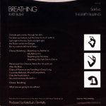

(These lyrics were originally from Andrew Marvick's
The Garden.)
 Misc page
The
Single File page
This
Woman's Work page
Misc page
The
Single File page
This
Woman's Work page
Album/Era
Alphabetical
Gaffaweb
"The Empty Bullring"
B-side to Breathing single
Written
by Kate Bush
French single

English
single
- Disappears through a window.
- Out of my mind
- Trying to keep him at home.
- Out into Rome
- In the early hours,
- Leaving me here
- Like Tamlaine in her Tower.
- You are going
- To the empty bullring,
- Taking your red cloak
- To regain something.
- Oh, you rolling matador,
- Kill in your eyes
- For the toro
- That shut the door
- To glory and gore.
- The throw of the rose--
- It's all you lived for,
- But you've lost it all.
- Your red streak
- On the plot where many feet
- Left it incomplete.
- But you kept the meaning.
- You feel him charge again,
- And you feel him cut you down
- Right on the spot
- Where you thought
- You were ground for good.
- These flights of fantasy
- Make your wounds more sore,
- But you've every right
- To even grab at the last straw.
- Oh, Lord...
- Oh, you rolling matador,
- Kill in your eyes
- For the toro
- That shut the door
- To glory and gore.
- The throw of the rose--
- It's all you lived for,
- But you've lost it all.
©1980 Kate Bush Music Ltd.
The Single File page
{kind=link}
{kind=link}
{kind=link}